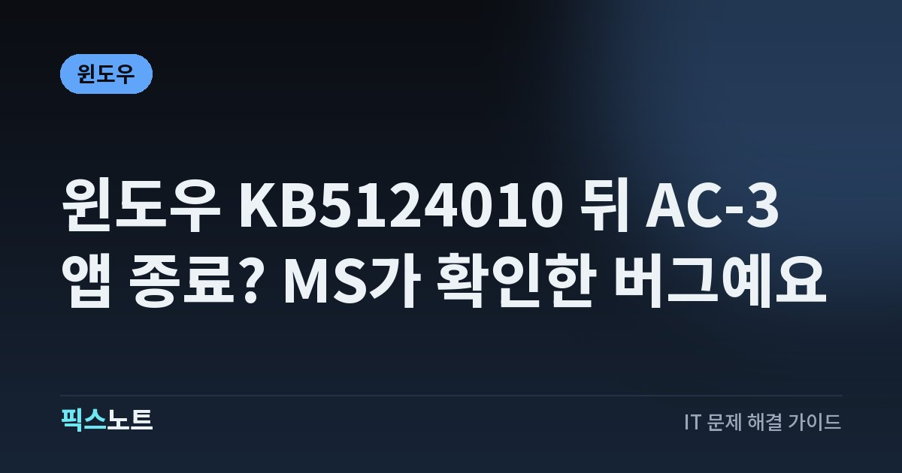

윈도우 KB5124010 뒤 AC-3 앱 종료? MS가 확인한 버그예요
KB5124010 설치 뒤 AC-3 재생 앱이 종료될 때 적용 범위와 지금 할 일을 확인해요.

9월 업데이트 뒤 특정 동영상이나 오디오를 열 때 앱이 갑자기 닫힌다면 앱 자체 문제만은 아닐 수 있어요. Microsoft는 KB5124010 이후 AC-3 디코딩이 필요한 앱이 예기치 않게 종료될 수 있는 문제를 Windows 11 릴리스 상태에 등록했어요. 해당 버전인지 가리고 불필요한 초기화나 코덱 설치를 피하는 순서로 정리해요.
결론부터: AC-3에서만 앱이 닫히면 알려진 문제부터 봐요
Microsoft의 Windows 11 26H2 릴리스 상태에는 2026년 10월 2일 새로 열린 알려진 문제로, 2026년 9월 22일 배포된 KB5124010 이후 AC-3, 즉 Dolby Digital 디코딩이 필요한 앱이 예기치 않게 종료될 수 있다고 적혀 있어요. 그래서 업데이트 뒤부터 특정 영화나 음원에서만 앱이 닫히고 다른 작업은 정상이라면 앱 재설치나 Windows 초기화보다 이 문제에 해당하는지 먼저 확인하는 편이 좋아요. Microsoft는 향후 Windows 업데이트에서 해결할 예정이라고 안내해요. 현재로서는 증상과 버전 범위를 정확히 가려 불필요한 조치를 줄이는 것이 핵심이에요.
영향 범위는 26H2·25H2·24H2예요
KB5124010 지원 문서에는 Windows 11 26H2, 25H2, 24H2가 함께 표시되고 OS 빌드는 각각 26300.9550, 26200.9550, 26100.9550으로 안내돼요. 같은 날짜에 업데이트를 했더라도 다른 빌드이거나 해당 KB가 설치되지 않았다면 원인을 바로 이 문제로 단정하면 안 돼요. 특히 ‘업데이트 뒤 소리가 안 난다’는 증상 전체가 아니라 AC-3 디코딩이 필요한 앱이 종료되는 현상이 공식 설명의 중심이에요. 일반적인 USB 오디오 장치 인식 실패, Bluetooth 연결 문제, 모든 앱의 무음 증상은 다른 원인일 수 있으니 증상 범위를 나눠 보세요.
내 PC가 해당되는지 먼저 세 가지만 확인해요
정확한 확인 순서는 어렵지 않아요. Windows 버전과 설치된 업데이트, 문제가 생기는 콘텐츠 종류를 따로 확인하면 돼요.
- Windows의 시스템 정보에서 26H2·25H2·24H2 중 어떤 버전인지 확인해요.
- 설치된 업데이트 기록에서 KB5124010이 있는지 확인해요.
- 앱이 모든 파일에서 닫히는지, AC-3 또는 Dolby Digital 오디오가 들어간 콘텐츠에서 주로 재현되는지 비교해요.
앱 전체 문제인지 AC-3 재생 문제인지 나눠 보세요
공식 알려진 문제의 핵심은 ‘AC-3 디코딩이 필요한 앱’이에요. 앱을 실행하자마자 항상 닫히는지, 특정 파일이나 특정 오디오 트랙을 재생할 때만 닫히는지 구분해야 해요. 같은 앱에서 AAC나 다른 오디오 형식의 파일은 정상인데 Dolby Digital 트랙에서만 반복된다면 알려진 문제와 더 가까워져요. 반대로 영상 재생과 무관하게 앱이 계속 죽거나, 여러 프로그램이 동시에 멈추거나, 블루스크린까지 발생한다면 이 글의 범위를 벗어날 수 있어요. 이벤트 기록이나 앱 자체 오류 메시지가 남는다면 시간과 함께 저장해 두면 지원 문의 때 원인 구분에 도움이 돼요.
당장 써야 한다면 콘텐츠와 앱을 바꿔 재현을 피하세요
Microsoft의 현재 안내는 후속 Windows 업데이트에서 해결한다는 내용이 중심이라 모든 PC에 공통으로 적용할 공식 수동 수정 절차는 제시되지 않았어요. 그래서 중요한 작업 중이라면 시스템을 크게 바꾸기보다 문제 조건을 피하는 쪽이 안전해요.
- 같은 파일에 다른 오디오 트랙이 있다면 AC-3가 아닌 트랙으로 재생해요.
- 동일 콘텐츠가 다른 형식으로 제공된다면 그 버전을 임시로 사용해요.
- 사용 중인 앱 업데이트가 있다면 개발사 릴리스 노트를 확인하고 최신 안정 버전을 써요.
Windows Update에서 후속 수정이 나왔는지 계속 확인해요
Microsoft는 이 문제를 ‘향후 Windows 업데이트’로 해결할 예정이라고 밝혔어요. 따라서 며칠 뒤에도 문제가 계속되면 릴리스 상태 페이지의 해결 상태와 Windows Update를 다시 확인하세요. 업데이트가 새로 보인다면 설치 전에 중요한 작업을 저장하고, 설치 뒤에는 재부팅한 다음 같은 AC-3 콘텐츠로 증상이 사라졌는지 확인해요. 해결 상태가 바뀌기 전에는 인터넷에서 임의로 레지스트리를 바꾸거나 시스템 파일을 교체하는 방법을 따라가기보다 공식 문서의 상태 변화를 기준으로 판단하는 편이 좋아요. 같은 이름의 KB라도 적용 빌드가 다를 수 있으니 버전과 빌드 번호를 함께 적어 두세요.
그래도 앱이 계속 닫히면 이 정보부터 모아 문의해요
후속 업데이트를 적용했는데도 같은 문제가 남거나, AC-3와 관계없이 앱이 닫힌다면 별도 원인을 확인해야 해요. 문의 전에 Windows 버전과 OS 빌드, KB5124010 설치 여부, 사용한 앱 이름과 버전, 문제가 재현되는 파일의 오디오 형식, 오류가 발생한 시간을 적어 두세요. 가능하면 다른 파일이나 다른 앱에서 같은 콘텐츠를 열었을 때 결과도 함께 남기세요. 이 정보가 있으면 Windows 알려진 문제인지 앱 자체 디코더 문제인지 나누기 쉬워져요. 중요한 작업 PC라면 대규모 초기화나 포맷보다 먼저 Microsoft와 앱 개발사의 최신 지원 문서를 확인하세요. 회사나 학교 PC처럼 업데이트 정책을 직접 바꾸기 어려운 환경이라면 관리자에게 KB 번호와 OS 빌드, 재현 파일 정보를 함께 전달하면 같은 알려진 문제인지 확인하기 쉬워져요.
자주 묻는 질문
KB5124010을 설치하면 모든 오디오 앱이 튕기나요?
아니에요. Microsoft가 확인한 내용은 AC-3, 즉 Dolby Digital 디코딩이 필요한 앱이 예기치 않게 종료될 수 있다는 문제예요. 모든 오디오 앱이나 모든 파일이 영향을 받는다고 안내된 것은 아니에요.
Windows 11 24H2도 AC-3 문제 영향 대상인가요?
네. KB5124010 공식 지원 문서에는 Windows 11 26H2, 25H2, 24H2가 함께 표시돼요. 다만 실제 증상이 AC-3 재생과 연관되는지와 해당 KB 설치 여부를 같이 확인해야 해요.
코덱 팩을 새로 설치하면 해결되나요?
Microsoft는 현재 이 문제의 공식 해결책을 후속 Windows 업데이트로 안내하고 있어요. 출처가 불분명한 코덱 팩을 여러 개 추가하기보다 증상 범위를 확인하고 공식 수정 업데이트를 기다리는 편이 좋아요.
업데이트를 제거해야 하나요?
공식 릴리스 상태 문서에서 모든 사용자에게 KB5124010 제거를 공통 해결책으로 안내하지는 않아요. 업무 영향이 크다면 먼저 Microsoft 최신 상태와 조직의 업데이트 정책을 확인한 뒤 판단하세요.